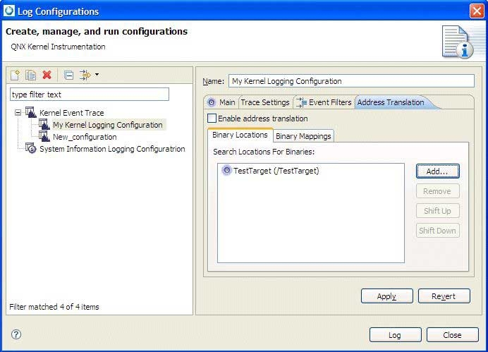
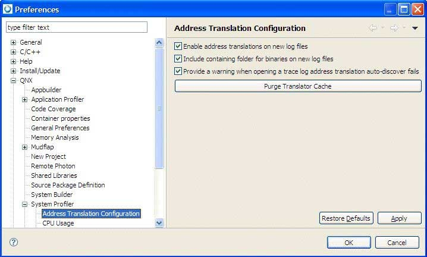

You can set your address translation information within the Kernel Event Trace Log launch configuration.

Address translation in Log Configuration dialog.
To enable address translation:
- From the Target Navigator view, select a target, right-click, and select .
- For a Kernel Event Trace configuration, select the Address Translation tab.
- Select Enable address translation, and then click Apply.
The address translation Binary Locations lets you specify the search locations to use for your binaries.
The Binary Mappings tab lets you specify the name of your binary (it will use the default load address). Click Add Binary to manually provide a binary name if your binary is not found. If you click Import, the Address Translation's pidin mem import lets you import only binaries that are contained within the defined binary search paths.
You can use the output from pidin to populate the binary mappings. The output will help you determine the load addresses of any libraries your application is using. To use this output, while your application is running, run the pidin command with the mem option, and output the results to a file (i.e. pidin mem > pidin_results). Use the Import button to select the results file.
For Address translation (for interrupt IP events), the log file must be matched with the binary files in your workspace for address decoding to occur.
When a new kernel trace that contains address translation information is generated using Kernel Event Trace logging, the kernel trace automatically contains the address translation information. If you launch an application using a launch configuration that has the Kernel Logging tool enabled, the address translation information for the generated kernel trace comes from the settings of the Kernel Event Trace configuration (specified by the Kernel Logging tool). Additionally, address translation information for the binary being launched will be added to the kernel trace (set using , and then select ).
Trace event labels for address translation
The Trace Event Label selection dialog includes address translation related keys (select System on the Select Event Data Key dialog) for Function Entry and Function Exit events. These address translation keys are:
- srcfile — The name of the source file where the called function resides.
- srcline — The line within the source file where the called function resides.
- srcfunction — The name of the called function.
- callsitesrcfile — The name of the source file from which the function was called.
- callsitesrcline — The line within the source where the function was called.
- callsitesrcfunction — The name of the function that called the function.
Automatic discovery of library addresses
Address translation allows for the automatic discovery of library load addresses by analyzing the log file for events. By default, the Add Library dialog in the Address Translation dialog lets you specify that the library address should be discovered automatically. When kernel logging is used in conjunction with a C/C++ launch configuration and the Application Profiler tool, address translation for the generated kernel trace will have address translation information.

Address translation: adding a library.
If you open a log file that has address translation information with libraries set to auto-discover, the log file will be analyzed and the library addresses determined for address translation. If library addresses are discovered, they're persisted to the trace log so that the lookup doesn't occur the next time you open the log. If the auto-discovery of library addresses isn't successful (i.e. generation of MMAPNAME events was disabled in the kernel trace log launch configuration), you'll receive a warning that you'll need to manually set this information.
You have the option to disable the warning, or by using the System Profiler address translation preference page (set using , and then select , and set the option Provide a warning if address translation auto-discovery fails while opening a trace log):

Setting preferences for address translation.
The libraries associated with the launch are also added to the address translation, along with the binary. These libraries will be set to auto-discover, meaning that under most scenarios when running a C/C++ launch in combination with the Application Profiler and System Profiler tools, address translation will automatically function without requiring user intervention.